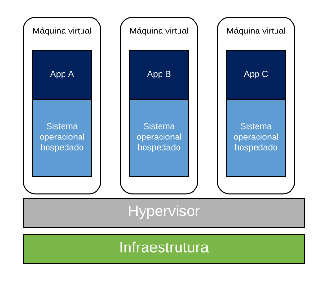
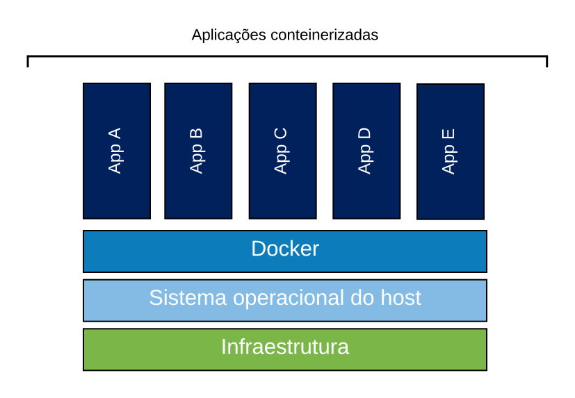

1 Introdução
Desde seu surgimento o Docker tem ganhado cada vez mais espaço nos servidores mundo a fora, suas caracteristicas fáceis de entender e simples de aplicar permitem sua utilização nos mais variados cenários.
No âmbito científico, o Docker vem sendo utilizado cada vez mais para a garantia da reprodutibilidade, uma vez que, suas características de isolamento de ambiente munidos da eficiência, permitem a fácil distribuição de ambientes já configurados para a execução dos trabalhos desenvolvidos, como @Boettiger2014 e @Schommer2014 apresentam.
O Instituto Nacional de Pesquisas Espaciais (INPE), por exemplo, faz a utilização do Docker, para tornar os sistemas científicos computacionais desenvolvidos mais acessível para todos que queiram fazer sua utilização de uma forma simples e rápida.
Neste contexto, este material busca realizar uma introdução do Docker e os principais conceitos envolvidos na utilização desta ferramenta. A criação deste material foi feita para ajudar a todos que queiram começar a utilizar o Docker em seu dia-a-dia 😄.
1.1 Por que Docker ?
A resposta para esta pergunta pode ter várias respostas, uma vez que, a depender do contexto onde você está inserido, o Docker pode trazer muitos benefícios, vou colocar aqui em um contexto mais relacionado ao desenvolvimento de aplicações. Então, vamos começar imaginando que você é um desenvolvedor Python, que está trabalhando em vários projetos.
O primeiro projeto que você está trabalhando, está relacionado ao desenvolvimento de uma aplicação web e para isso, tem utilizado o PostgreSQL e Django, para realizar o desenvolvimento, já o segundo projeto, está ligado ao processamento de dados geoespaciais e você utilizou o GDAL e o numpy. Tudo bem até aqui ? É um cenário simples de imaginar.
Bem, como você desenvolve na mesma máquina e é um desenvolvedor Python com bastante experiência em projetos, entende que, as dependências do projeto web não podem interferir no projeto de processamento de geodados. Para resolver este problema você cria ambientes virtuais dentro do Python, com isso, você consegue separar os projetos e garantir que, as bibliotecas e dependências de um projeto em momento algum irão interferir em outro projeto, além de permitir que você controle melhor as dependências de cada projeto.
Então, você finaliza os dois projetos e eles devem ser distribuidos para todos e é aqui que os problemas começam, durante a instalação das dependências, você percebeu que, dependendo da versão do S.O, a biblioteca que você utilizou para se conectar ao PostgreSQL, SQLAlchemy, apresenta problemas quando tenta ser instalado com o pip, o que faz a instalação dos requirements.txt dar problemas. E ainda, no projeto de processamento, uma das dependências, o GDAL, que facilita a leitura de dados espaciais também tem o mesmo problema, dependendo da plataforma, ele tem problemas para instalar.
Ops! Os projetos estão prontos, porém as dependências podem dificultar a utilização e implantação deles. É aqui que entra o Docker, você vai criar duas imagens (Serão apresentadas mais para frente no material) com todo o seu projeto e o Docker vai garantir que, independende da plataforma ou do OS utilizado, eles vão funcionar.
Veja que interessante! Com o Docker, o famoso “Na minha máquina funciona” deixa de existir, e o projeto vai funcionar em todas as plataformas. Este é um pequeno exemplo de o porque utilizar Docker, outros poderiam ser colocados aqui.
Esta mini história foi inserida apenas para você entender que o Docker pode te ajudar em problemas do dia-a-dia.
1.2 Virtualização
Bem, para começarmos a falar de Docker, vamos antes falar um pouco sobre virtualização, um conceito fundamental no entendimento do funcionamento do Docker.
Virtualização é o processo de criar ambientes virtuais isolados, providos por alguma ferramenta de geração deste ambiente (@Soltesz2007), sendo que existem duas formas de prover estes ambientes virtuais (@Chung2016), sendo elas as baseadas em container e as baseadas em hypervisor (@Morabito2015).
Na virtualização baseada em hypervisor é criado a representação virtual de um hardware (@Firesmith), também chamada de MV, que é controlada por um hypervisor, sendo este uma camada que faz o intermédio de recursos entre o ambiente virtual criado e o hardware, e neste ambiente virtual gerado, sistemas operacionais comuns podem ser executados. Esta representação de hardware é completamente isolada da máquina onde está sendo alocada (@Morabito2015), o que permite, por exemplo, que uma máquina que gera uma MV seja Linux, e o ambiente instalado dentro da MV seja Windows (@Morabito2015). O ponto de troca aqui é que, o sistema operacional terá de ser instalado por completo dentro da MV (@Morabito2015).
A Figura abaixo apresenta a arquitetura das virtualizações hypervisor.

Veja na Figura que, acima do hypervisor, que gera as representações virtuais de ambientes de execução, são instalados todo o sistema operacional e então, as aplicações podem começar a ser executadas.
Por outro lado existem as técnicas de virtualização baseadas em containers, que são executadas a nível de sistema operacional (@Firesmith), que criam ambientes isolados com o compartilhamento de arquivos, bibliotecas e o kernel do sistema base onde está sendo executado. Estes ambientes isolados são utilizados para a execução de processos e aplicações.
É neste tipo de virtualização que o Docker se encaixa.
Na Figura abaixo é possível visualizar como este método de virtualização funciona.

Veja que, não há representação de várias máquinas sendo criadas e sim de aplicações que estão sendo executadas, já que, neste método de virtualização, cada um dos ambientes criados, também chamados de containers, normalmente executam um único processo que pode, por exemplo, ser uma aplicação web ou mesmo um processo bash, que disponibiliza um terminal ao utilizador.